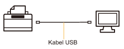
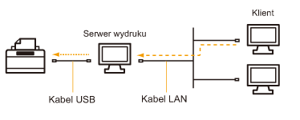

Sterownik drukarki jest niezbędnym oprogramowaniem, umożliwiającym korzystanie z tej drukarki.
 |
Informacje na temat środowiska systemowego wymaganego do użycia sterownika drukarki znaleźć można w sekcji "Wymagania systemowe dla drukowania".
|
|
|
Procedura instalowania sterownika drukarki różni się w zależności od środowiska systemu. Zapoznaj się z poniższymi punktami w zależności od posiadanego środowiska systemu.
Podłączanie drukarki do komputera za pomocą kabla USB

Istnieją dwa poniższe sposoby instalacji sterownika drukarki.
<Łatwa instalacja>
Zainstaluj sterownik drukarki z dostarczonej płyty CD-ROM (Instalator dysku CD-ROM). Jednocześnie zainstalowany zostanie e-Podręcznik.
<Plug and Play>
Wykrywa drukarkę działającą w trybie Plug and Play i instaluje sterownik drukarki poprzez jego ręczne wybranie z dostarczonej płyty CD-ROM.
Korzystanie z drukarki w środowisku serwera wydruku

Jeśli posiadany komputer jest serwerem wydruku
Informacje na temat procedury instalacji sterownika wydruku znaleźć można w sekcji "Podłączanie drukarki do komputera za pomocą kabla USB".
|
|
Po zakończeniu instalacji należy skonfigurować serwer wydruku.
|
Jeśli posiadany komputer to komputer klient
Istnieją dwa poniższe sposoby instalacji sterownika drukarki.
<Instalacja lokalna>
Sterownik drukarki można zainstalować przy użyciu dostarczonej płyty CD-ROM.
<Instalacja z pobraniem>
Sterownik drukarki można zainstalować bez używania dostarczonej płyty CD-ROM poprzez jego pobranie z serwera wydruku. Istnieją dwa poniższe sposoby pobrania i instalacji sterownika drukarki.